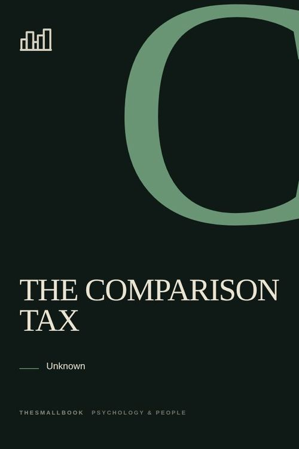

Why Did Rana Plaza: The Price Sewn Into the Label Fail?
The Cheapest T-Shirt Ever Made
What happened
Rana Plaza in Savar, outside Dhaka, was an eight storey building designed for shops and offices and converted, floor by illegally added floor, into garment factories housing thousands of machines and workers producing for European and American brands. On 23 April 2013 large cracks appeared in the structure; the building was evacuated and a bank and shops below closed. Factory owners, under delivery pressure, ordered workers back in the next morning, some reportedly with threats to wages. At about 8:45 a.m. on 24 April the building collapsed. At least 1,134 people were killed and some 2,500 injured, the deadliest disaster in garment industry history. Rescue ran for weeks through concrete that had been poured for retail loads and loaded with industrial generators. The collapse detonated the industry's deniability: labels of famous brands were pulled from the rubble, and within weeks over 200 companies signed the Bangladesh Accord, a legally binding safety agreement with inspections and remediation, while a rival alliance of American brands chose a weaker voluntary scheme. A decade on, the Accord model expanded to Pakistan, wages and safety remain contested, and the price pressure that built Rana Plaza still flows down every purchase order.
The fatal mistake
The building was a fraud in concrete, permitted for one use, extended illegally, and loaded beyond design, while inspectors were bribed or absent. Factory owners then made the moral decision inside the structural one: production targets over an evacuated building, workers' fear priced lower than late delivery penalties. The brands above them had engineered the blindness they enjoyed, auditing paperwork through layers of subcontracting while squeezing price and lead time in ways that made safety a fiction everyone signed. The state's regulators were outnumbered and compromised. Each layer truthfully claimed the collapse was not on its desk, which is how 1,134 people ended up on nobody's.
The lesson
Your supply chain's real standards are set by your price and deadline, not your code of conduct; audit what your purchase order makes possible. Binding beats voluntary when lives are priced against margins: the Accord's legal teeth exist because Rana Plaza proved signatures without them are stationery. Workers need a refusal channel that survives payday: the right to decline an unsafe building, protected and paid, is the cheapest inspection regime ever designed. And subcontracting depth is a moral choice. If you do not know which building your product is in, you have decided not to know.
The antidote book

Comparison feels like information. It is actually a tax: on focus, on joy, and on the decade you were given to build your own thing.
READ THE SUMMARY OPEN INTERACTIVE BOOKQuestions people ask about Rana Plaza: The Price Sewn Into the Label
Why did Rana Plaza: The Price Sewn Into the Label fail? The building was a fraud in concrete, permitted for one use, extended illegally, and loaded beyond design, while inspectors were bribed or absent. Factory owners then made the moral decision inside the structural one: production targets over an evacuated building, workers' fear priced lower than late delivery penalties. The brands above them had engineered the blindness they enjoyed, auditing paperwork through layers of subcontracting while squeezing price and lead time in ways that made safety a fiction everyone signed. The state's regulators were outnumbered and compromised. Each layer truthfully claimed the collapse was not on its desk, which is how 1,134 people ended up on nobody's.
How much was lost? 1,134 garment workers dead in a building that had been evacuated the day before
What is the lesson? Your supply chain's real standards are set by your price and deadline, not your code of conduct; audit what your purchase order makes possible. Binding beats voluntary when lives are priced against margins: the Accord's legal teeth exist because Rana Plaza proved signatures without them are stationery. Workers need a refusal channel that survives payday: the right to decline an unsafe building, protected and paid, is the cheapest inspection regime ever designed. And subcontracting depth is a moral choice. If you do not know which building your product is in, you have decided not to know.
Rana Plaza: The Price Sewn Into the Label kyun fail hua? In simple English: The building was a fraud in concrete, permitted for one use, extended illegally, and loaded beyond design, while inspectors were bribed or absent. Factory owners then made the moral decision inside the structural one: production targets over an evacuated... The cost was 1,134 garment workers dead in a building that had been evacuated the day before.
Keep digging
More business failures · Open the full Graveyard
Read the antidote book summary: The Comparison Tax
Related failures
- Why did Skype fail? 2025 · The Verb That Lost a Pandemic It Should Have Owned
- Why did JOANN fail? 2025 · The Craft Shelf Lost Its Footing
- Why did rue21 fail? 2024 · Three Bankruptcies Were the Market's Answer
- Why did Zee-Sony Merger fail? 2024 · A $10B Media Titan Blown Apart by Promoter Egos
- Why did Tupperware fail? 2024 · The Party Ended After 78 Years
- Why did The Body Shop fail? 2024 · The Ethical Beauty Pioneer That Couldn't Outlive Its Founder's Shadow
They paid full price. You get the lesson in simple English.